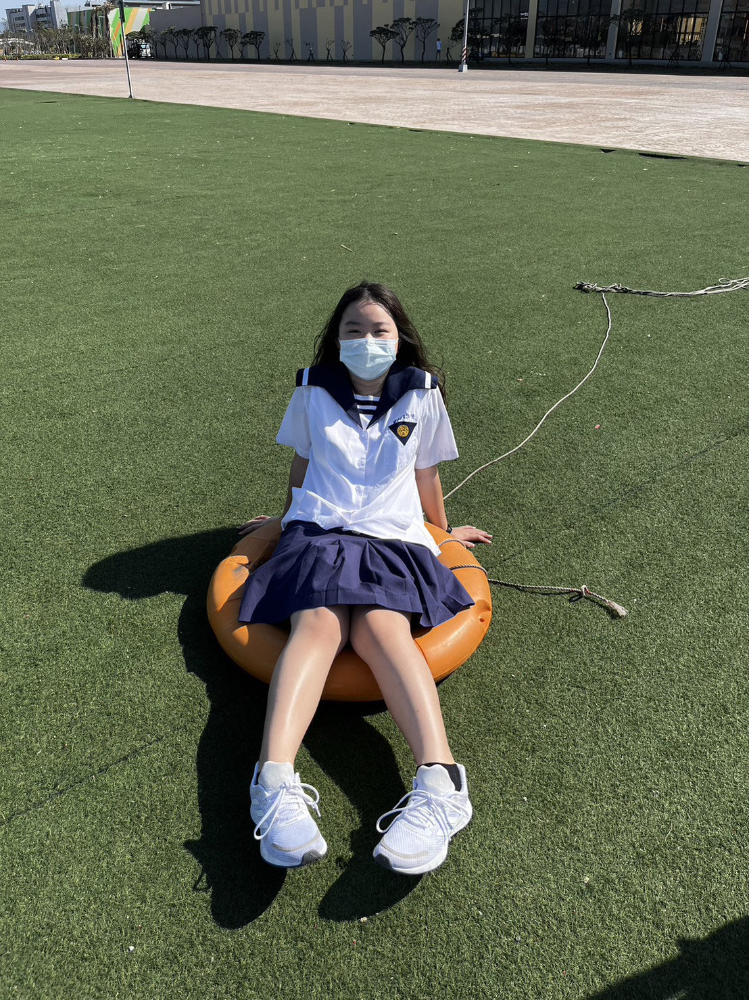

結合 UCAN 職能診斷與 104 職場視野，探索藝術創意與資管邏輯的完美交集。

我是就讀靜宜大學資訊管理系的大學生，對資訊系統與科技應用充滿熱忱。透過 UCAN 職涯測驗，確認自己具備 ARI（藝術型・實用型・研究型）的職業人格特質，擅長結合創意思維與邏輯分析。
在專業職能方面，系統分析與技術文件撰寫是我的相對優勢；在職場共通職能上，人際互動與創新思維得分較高，也清楚認識到自己在溝通表達、持續學習與團隊合作方面仍有提升空間，並擬定具體的成長計畫。
創意空間規劃工作室
資訊系統開發集團
ARI 類型
產品維護 PR60
已整合 UCAN/Vercel